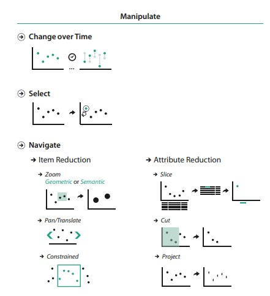
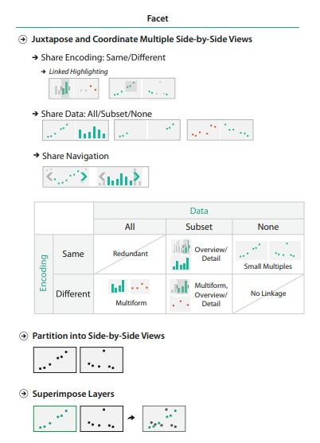
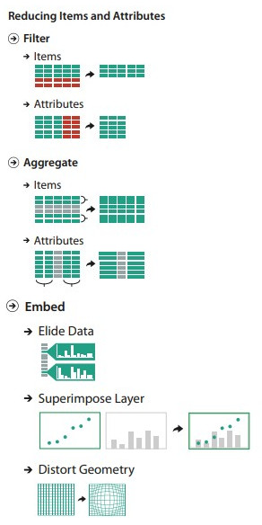

11a: Manipulate, facet, reduce
Ideas to improve visualizations
Recap: How to design viz idioms

Visualization Interactivity
A lot of the viz design techniques discussed below requires interactivity to be baked into the visualization idiom.
- View Manipulation — Change / Selection / Navigation
- Faceting — Juxtapose / Partition / Layering
- Reduction — Filter / Aggregate / Embed
View manipulation
Why do view manipulation?
To help navigate the dataset.
To highlight specific data, draw attention to insights / trends, etc.
Change over time
Basically animation tweening / transitions over time.
Time is encoded as an channel (animation) in the viz to show changes.
- Change the layout arrangement
- Change dataset
- Reorder the data
- Change specific channel encodings (e.g. color schemes, symbol marks)
- Even change the chart idiom entirely (e.g. line chart to pie chart)
Bivariate animation chart (in R, video), Nathan Yao
Selection
Selecting a datapoint, or a subset / superset of data
- Highlighting
- Tooltipping
- Brushing
D3 Graph Gallery: Interactivity, Brushing
ObservableHQ: Scatterplot Matrix, Brushing
ObservableHQ: Brushing Collection
Navigation (items)
Navigating levels (subsets and supersets of the current view), i.e. going up and down the ladder of abstraction. Techniques:
- Zooming
- Panning
- Guided (constrained) navigation
We've gone through examples in the geospatial space, but this can also be applied to other types of charts.
Zoomable scatterplot Obeservable HQ, Mike Bostock
Lifemap (Leaflet + raster tiles), University of Lyon
Navigation (dimension reduction)
An intuitive common understanding is taking a 3D dataset and turning it into a a 2D visualization via the below techniques. Of course these can be applied to higher dimentsions.
- Slicing
- Cutting
- Projecting
3D slicer, free open source compute platform for slicing 3D images.
Visualizing quaternions, 3Blue1Brown (Ben Eater) - Amazing!
View faceting
Why facet?
Multiple views juxtaposed side by side (instead of presented one after another over time!) allow us to compare two views simultaneously.
Drawback is of course display space and working memory constraints.
Multiform Visualizations
Showing the data (all or subset) through different chart encodings.
Usage of linked highlighting shows how one view is linked to another.
Probably higher likelihood that the visualization is custom because of all the interaction.
Covid19 Surveillance Dashboard, University of Virginia
Small Multiples
Show entirely different partitions of the data through the same viz encoding.
Thank Edward Tuft for popularizing sparklines and small multiples.
How Pew Research Center uses small multiple charts, Peter Bell
Global Technology Tracker, Bloomberg (Sparklines!)
Scottish politics, The Guardian
Layering
Superimposing layers of data on top of one another.
e.g. having multiple lines on one line chart, points of interest on maps, etc.
Often works with filters to show / hide layers.
View reduction
Why reduce?
Often to reduce visual clutter in your visualizations and make it easier to understand.
Filtering (item or attribute)
Use an interface option to show/hide a data items or attributes.
Aggregate
Group data elements to create new derived attributes.
E.g. Histogram, density plots, beewswam, hexbin, ridgelines, etc.
Income in Each State, Adjusted for Cost of Living, Nathan Yau (histogram, faceted)
How many humans have ever lived, VisualCapitalist
Mapped: All the world's military personnel, VisualCapitalist
Dimension reduction
Dimension reduction is often necessary for dealing with extremely large datasets, breaking the data down into feature vectors.
Embed (focus + context)
Focus–plus–context enables viewers to see the object of primary interest presented in full detail (focus) while at the same time getting a overview–impression of all the surrounding information (context).
Elide - ObservableHQ: Focus + context, Mike Bostock
Distort - Fisheye distortion, Mike Bostock
Distort - Worldmapper.org, (geospatial distortions)
Questions?
Chi-Loong | V/R